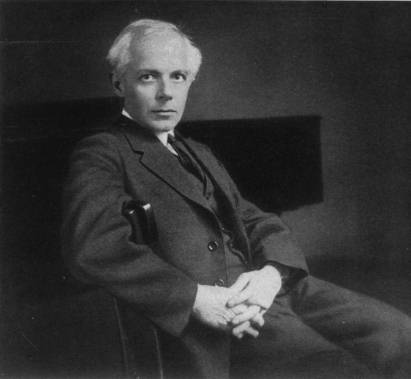

Béla Viktor János Bartók
(1881-1945)
Béla Viktor János Bartók (March 25, 1881 – September 26, 1945) was a Hungarian composer and pianist. He is considered one of the most important composers of the 20th century and is regarded, along with Liszt, as Hungary's greatest composer (Gillies 2001). Through his collection and analytical study of folk music, he was one of the founders of ethnomusicology.
